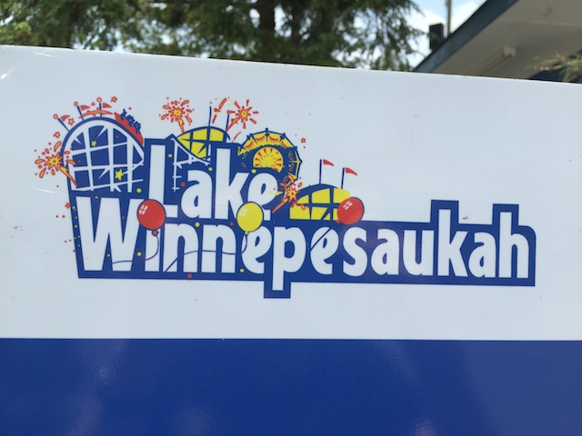
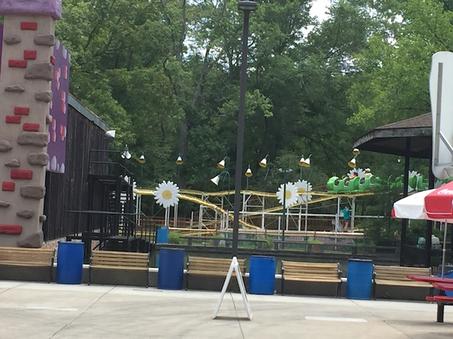
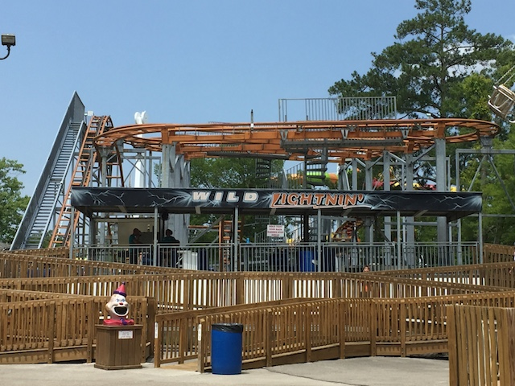
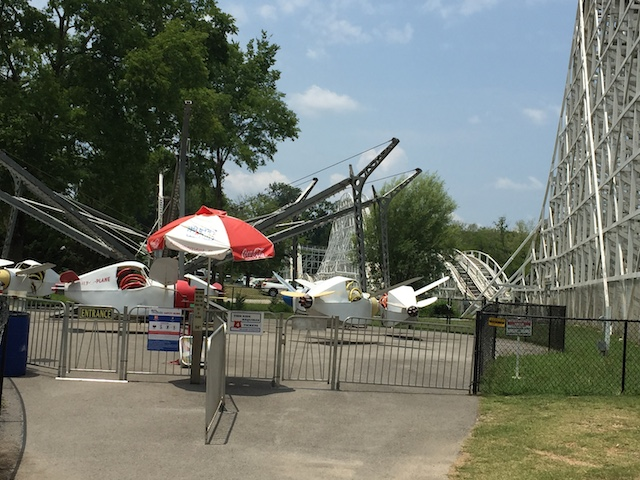
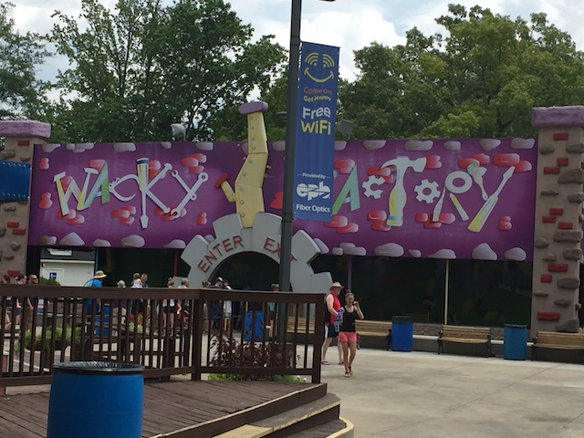
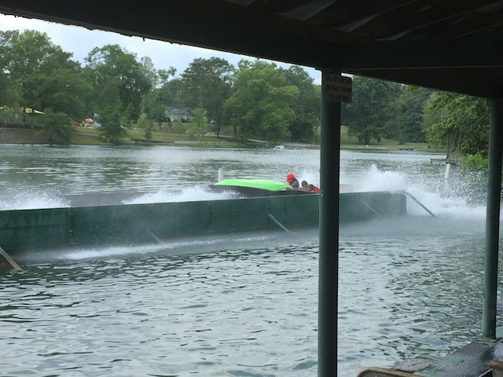

| |
Lake Winnie Review

Lake Winnie is a fun little quirky park. It's one of those parks that's not super well known by enthusiasts. OK. It's not completely unheard of. But this isn't a big park that is on many coaster enthusiasts to travel list. As...yeah. This is mainly another one of those small little local parks. So in a sense, it's sort of a credit whoring park, as there's really not a whole lot here. But for what it is. It does have a nice little bit of charm to it. The one wooden coaster they have is actually a fairly fun ride. OK, it's not amazing. Not gonna crack any Top 10 Lists. But I really enjoy it (And if you want more info on it, I review it down below.). And yeah. That's the main reason almost any coaster enthusiast would be interested in the park. But on top of that, there are some other fun rides, including a really rare flat ride. Yeah, there's actually a really rare flat ride here. But it's just a fun little park right on the border of Georgia and Tennessee. As it may be a Georgia park, but the nearest major city is in Chatanooga. The joy of being on a border. So while a coaster enthusiast might be amused by the park, and entertained by the rides, nothing really stands out as being special. But if you're a local, there's just enough here for you to ride some rides, enjoy a good roller coaster, and have a fun afternoon.
Rollercoasters
There is a link to a review of all the Rollercoasters at Lake Winnie.
Top Coasters
Cannonball Review

Kiddy Coasters
Wacky Worm Review

Past Coasters
Wild Lightning Review

Flat Rides
Here are the reviews of all the Flat Rides at Lake Winnie. OK. Let's start out with the most unique flat ride, and one that I wish was more popular. The Fly-O-Plane. You might be thinking "Really? A park like Lake Winnie has a state of the art, latest technology, rare and unique flat ride?". Nope! In fact, it's the exact opposite. It's very old. Very classic. The reason its so rare is because Lake Winnie is the only park that didn't get rid of this ride. In fact, I'm not sure if rides like this were ever popular. I mean, I know it's a very fairgrounds style ride. But I feel like this ride would blend in quite well at Lakeside Park. But yeah. It's a very old school ride. And it's a lot of fun. You're in an airplane, and you control the flipping. So you can really make it go crazy. But...yeah. You can sort of tell why these rides dissapeared. They're incredibly clunky. They don't feel stable. It's very...interesting. Still totally worth riding. It's by far, the most unique rides at the park. However, while the Fly-O-Plane is a lot of fun and the most unique flat ride, it's not the best flat ride. That would be their drop tower. Oh-Zone. This would be a Shock Drop. So you have no idea when you're going to drop. You just start climbing up. Going up, up, up, DROP!!! So it really catches you by surprise. They're really fun rides, and I'm very happy one is at Lake Winnie. Those are the two main flat rides worth discussing and riding, but there are plenty of other random fun flat rides. For instance, we rode their Paratrooper. Eh, nothing special about it. It's just over grass and asphalt paths. But hey. Paratroopers are fun. They also have a Super Loop, this one weird sort of Top Spin that I think was closed when I was there, cause that's something I would've bothered to ride, the Falling Star from Hersheypark, a round up, a matterhorn, a spider, a pirate ship, a tilt a whirl, a scrambler, some chairswings, some bumper cars (hopefully, there's no bullsh*t One Way Rules), and a carousel. So yeah. None of those flat rides are anything special. All of those are pretty much your generic "Classic Amusement Park" flat rides. I'm pretty sure you can buy them all in this one package deal. And they're all a lot of fun. Hopefully they run them all really well here.

This thing may be clunky, but it's a ton of fun and super rare. Don't miss it. =)
Dark Rides
Small parks like Lake Winnie may not be super well known for their dark rides. They generally don't have the budget to get those super high tech fancy dark rides. But that just means that you get the budget dark rides. And...they're guilty pleasure fun. And Lake Winnie has a fun one. It's called Wacky Factory. Now just watching a POV of it, this should be terrible. Half of the ride is just moving in total darkness, and then you get rooms of brightly colored flashing lights, funhouse effects, more darkness, and it's over. I know I've complained about similar dark rides and said that they're sh*tty and lame. And yeah. I can see the argument of how that's true of Wacky Factory. But...it's enjoyable stupid. It's like a B-Movie. You know it's terrible, but it's enjoyably terrible. It's basically the Santa Claus Conquers the Martians of Dark Rides. So despite being complete and total utter crap, I still had fun and would recommend riding it.

It's so stupid it's fun.
Water Rides
All right. There's one main water ride worth talking about here. And...it's an intersting ride to say the least. That would be the Boat Chute. Man is this ride stuck in the past. I mean that in both a good way and a bad way. There really are no more rides like this. Now the ride starts out as just one long giant tunnel. So yeah. It's like this thing is a dark ride. And I LITERALLY mean a dark ride. There's NOTHING in the tunnel. I'd say it's like those tunnel of love rides you see in cartoons, except those at least have crappy love theming. This is literally just darkness. They literally just constructed the walls, made it dark, and yeah. It's like they began to make a dark ride, but once they built the walls, they changed their minds and just left it. OK. So why is it in the water ride section? Because after the tunnel, you then go up a lifthill, and then drop right down into Lake Winnie. Yeah. There are almost no rides like it now. OK, there are the modern Shoot the Chutes. But rides like Boat Chute, they seem to be a dying breed. On the one hand, it's enjoyably corny and cheesy, and its uniqueness makes it worth a ride. But...yeah. So much of the ride is nothing. You can see why they don't make them like this anymore. And that's a good thing.

Wow. That was just 5 minutes of darkness.
Water Park
Surprisingly, despite being such a small little park, Lake Winnie does have their own water park. Soak Ya! That's literally the name of the water park. It does seem incredibly generic and whatever. But hey. I'm sure it's still a lot of fun.
Dining
I did not eat at Lake Winnie.
Theming and Other Attractions
Here are the reviews of all the other stuff at Lake Winnie. For theming, well...there is none. Small little parks like that never have theming. Not even cheap crappy amusement park theming. It's a total amusement park through and through. I will admit that there is a little bit of an atmosphere to the park. Mainly that of an old classic amusement park. So that's enjoyable. As far as other stuff to do, not a whole lot. Some midway games, arcade games, yeah. Stuff like that. But Lake Winnie definetly is a park that is about rides. I mean, the park is for locals. If you don't want to ride rides, you can go somewhere else.
In Conclusion
Lake Winnie is a fun little park that may not really stand out to most coaster enthusiasts. Nothing about it screams being a big destination. But like so many parks, that's not what it's meant to be. What it's meant to be is a fun little amusement park for locals in Georgia and Tennessee. Sure, it doesn't stand out, but there are some fun rides to the park. Cannonball is actually a really fun wooden coaster. Fly-O-Plane is one of the only rides of its type in the world, and the only one in America. Boat Chute is a quirky ride, and you can definetly tell that they don't make rides like this anymore. I know the park is really close to Chattanooga, and yeah. Chattanooga isn't a place that most coaster enthusiasts are heading out to. But if you are a local, and you want to head out to a local amusment park, Lake Winnie is a fun little park. Sure, you could just make the drive and go to a park like Dollywood. A world class park. Yeah. You should do that. But Lake Winnie is still a fun little park worth a quick visit if you're in the area.
Enthusiast FAQs.
*Are there kiddy coaster restrictions? - No. There are no restrictions for the Wacky Worm

Tips
*Be sure to check out Cannonball and Fly-O-Plane.
*I'm unsure of the POV Policy.
*Have Fun!!!!
Location
Rossville, Georgia, U.S.A
Theme Park Category:
Small Park
Last Day Visited
June 26, 2016
Video
I don't have enough footage to do a Lake Winnie video. It's very unlikely that one will ever be made. But not impossible.
Complete Update List
2016
Deep South Trip 2016
Here's a link to the parks website.
Home
|